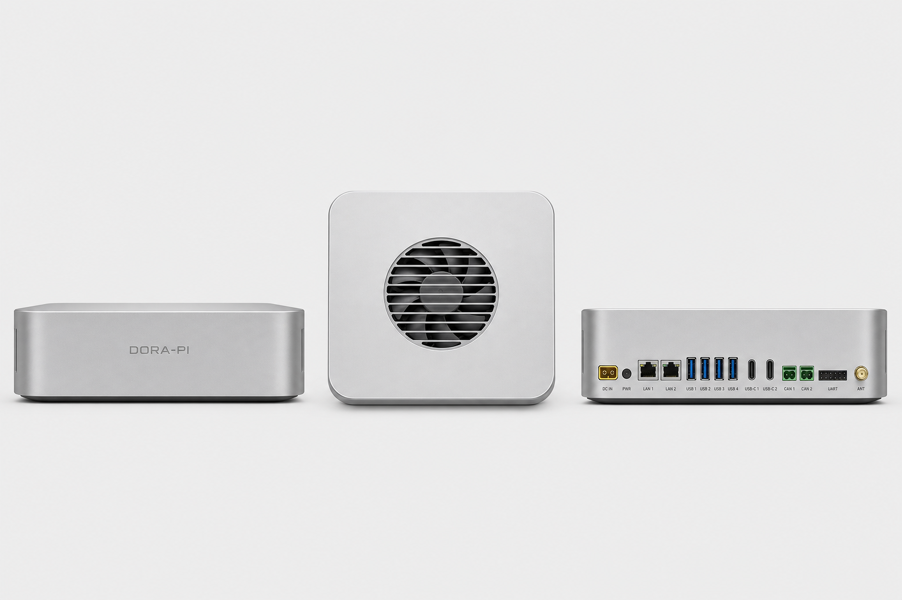

基于 ARM 计算平台，预集成 dora 数据流框架、OminiX-API 本地推理环境与星闪（NearLink）机器人无线通信——以"通信、计算、软件框架、算法、AI 模型"五维一体的设计，为机器人的"感知—决策—执行—通信"全链路提供开箱即用的 Physical Intelligence 底座。
Core Capabilities
八项为机器人而生的关键能力
四核 Cortex-A72 + 四核 Cortex-A53，主频 2.2GHz，CPU 算力 58K DMIPS；独立 6TOPS INT8 NPU，支持 INT4/8/16、FP16/BF16/TF32 混合精度，兼容 TensorFlow / PyTorch，可本地部署轻量大语言模型与视觉算法。
板载一路环形 8 麦克风阵列，预留级联环麦接口，支持 10 米远程定向语音拾取、360° 全向拾音与 DOA 声源定位；I2S 高精度输出配合 USB 音频通路实现回声消除、噪声抑制与波束成形，保证嘈杂环境下与机器人的可靠语音通信。
Mali-G52 MC3 GPU @ 1GHz，支持 OpenGL ES 3.2 / Vulkan 1.1 / OpenCL 2.0；VPU 支持 H.265/HEVC/AVS2/VP9/AV1 8K@30fps 或 4K@120fps 解码，H.265/H.264 4K@60fps 编码；Type-C 支持 DP1.4 4K@120fps 显示输出。
8GB / 16GB LPDDR4X + 64GB eMMC，为多模型并发推理、大规模 SLAM 建图、本地知识库缓存提供充裕空间，保障机器人长时间连续运行的稳定性。
12V–24V 宽电压 DC 供电，XT30 航模插头兼容主流机器人锂电池组；外设接口预留丰富：2× RJ45 千兆网口、4× USB 3.2、USB 3.0/DP、Type-C USB 2.0（调试）、2× CAN、UART、2× I2C——总线、网络、调试一站式到位，适配配送、巡检、清洁等多种机器人形态。
板载星闪 1.0 模组（星闪 2.0 模组 2027 年提供），全面支持 NearLink 标准——以确定性时延、强 QoS 调度、高精度时间同步与 5G 级信道编码，替代 WiFi 承担传感器数据流与实时控制链路（详见下文专章）。
出厂预装 dora 数据流机器人框架：基于共享内存的零拷贝节点通信、声明式 YAML 数据流编排、多语言节点（Rust/Python/C/C++），与 ROS 2 可桥接共存，"感知—决策—执行"流水线开箱即跑。
预装 OminiX-API 本地推理环境：统一的本地大模型与视觉/语音模型服务接口，充分利用 6TOPS NPU，离线完成语音识别、视觉理解与轻量大模型推理，数据不出机器人。同一套 API 同时覆盖边缘推理服务器——板载 NPU 与昇腾 910B / RTX 5090 / Mac mini 等边缘后端共用统一接口，本地与远程推理对应用透明，按负载自动路由。
完整 BSP 驱动包与 SDK 工具链，兼容 ROS / ROS 2；RKNN 工具链支持主流模型一键转换量化部署，配套 AI 算法参考案例，缩短从原型到量产的周期。
Specifications
完整硬件技术指标
| CPU | Rockchip RK3576 · 四核 Cortex-A72 + 四核 Cortex-A53 · 8nm 先进工艺 · 主频高达 2.2GHz |
|---|---|
| GPU | G52 MC3 @ 1GHz · OpenGL ES 1.1/2.0/3.2、OpenCL 2.0、Vulkan 1.1 · 内嵌高性能 2D 加速硬件 |
| VPU |
|
| NPU | 6TOPS INT8，支持 INT4/8/16/FP16/BF16/TF32 混合运算 |
| 操作系统 | Linux（预集成 dora 数据流框架与 OminiX-API 本地推理环境，兼容 ROS / ROS 2） |
| 内存 | 8GB / 16GB LPDDR4X（可选配） |
| 存储器 | 64GB eMMC |
| 音频输入 | 1× 环形 8 麦克风阵列（预留级联环麦接口），支持 10 米远程定向语音拾取、360° 全向拾音与 DOA 声源定位 |
| 视频输入 | 1× MIPI CSI 接口 |
| 音频输出 | 最高 2×40W 立体声喇叭 |
| 视频输出 | 1× Type-C，支持 DP1.4（4K@120fps） |
| 网络 | 2× RJ45 千兆以太网；板载星闪 1.0 模组（星闪 2.0 模组 2027 年提供） |
| 外设接口 |
|
| 其他接口 | 1× FPC 排线接口（含：1 路 USB、1 路 UART、1 路 I2S 和控制 IO）；I2S 信号仅用于 DOA 信号的输出，USB 信号用于音频的输入和输出，UART 用于通讯，IO 信号用于控制。电源接口：XT30 航模插头 |
| 供电 | 宽电压 DC 直流供电：12V–24V |
| 整机尺寸 | 紧凑桌面级（具体尺寸待发布） |
| 重量 | 待发布 |
| 工作温度 | 待发布 |
| 功耗 | 典型功耗 / 峰值功耗：待发布 |
Industrial Design
CNC 加工铝合金外壳 · 银灰色阳极氧化 · 紧凑桌面级尺寸 · 三面视图

6061 铝合金 CNC 精密加工，银灰色阳极氧化表面处理，倒角边缘，兼顾质感、强度与电磁屏蔽。
两侧 CNC 铣削散热格栅形成对流风道，顶部中央低噪风扇主动排热，保障 6TOPS NPU 长时间满负荷运行。
所有物理接口集中于后部面板，前面板保持极简——机器人整机走线整洁，维护时无需拆卸前面板。
Software Stack
不止于'能跑'，更要'出厂即跑'：dora 数据流 + 本地大模型推理一体化
预集成 dora-rs：以数据流（dataflow）范式组织机器人软件，节点间基于 Apache Arrow 共享内存零拷贝传输，延迟远低于传统消息序列化中间件。一份 YAML 声明传感器、感知、规划、控制节点拓扑，dora 负责调度与热重载；节点可用 Rust / Python / C / C++ 编写，并提供 ROS 2 桥接，复用现有 ROS 生态组件。SLAM、语音交互、视觉检测等参考数据流图随板附带。
预装 OminiX-API：为本地模型提供统一的 OpenAI 兼容 API 服务层，覆盖大语言模型、视觉理解、语音识别与合成等能力，模型经 RKNN 工具链转换后充分利用 6TOPS NPU。机器人无需联网即可完成"听懂—看懂—决策"闭环，敏感数据全程留在本地。同一套 API 同时覆盖边缘推理服务器（昇腾 910B / RTX 5090 / Mac mini 等）——本地与远程推理共用统一接口，对应用透明，按负载自动路由。
dora-moveit2 · 运动学 / 轨迹规划 / 碰撞检测DORA_NAV · 点云建图 / 路径规划 / 行为树opencv-video-capture · opencv-plotdora-yolo · NPU 推理dora-sam2dora-vggtdora-mediapipedora-object-to-posedora-funasr · dora-distil-whisperdora-vaddora-kokoro-tts · dora-piperdora-translatedora-pyrealsensedora-pyorbbecksdkdora-ios-lidardora-microphone · dora-pyaudiodora-lerobotdora-policy-inferencedora-pytorch-kinematicsdora-rustypotdora-reachy1 · dora-reachy2dora-kit-car · dora-ugvdora-teleop-xrlibfranka-rsdora-mujocodora-rerundora-gradiodora-record · dora-parquet-recorderdora-mcp-server · dora-mcp-hostdora-rav1e · dora-dav1ddora Hub 提供 60+ 官方节点（github.com/dora-rs/dora-hub），一行接入：hub: dora-yolo@^0.5。
Wireless for Robots
WiFi 为办公上网设计，星闪为确定性控制设计——机器人该用哪一个，一目了然
| 指标 | WiFi 6 | WiFi 7 | 星闪 SLB / SLE |
|---|---|---|---|
| 空口时延 | 数 ms 级，抖动无界 | ~1ms 级（MLO 改善均值，最坏情况仍无界） | SLB ~20µs · SLE 双向 250µs |
| 可靠性 | 无保证（竞争接入） | 无硬保证（MLO 提升韧性，仍竞争接入） | 99.999%（Polar 码 + HARQ） |
| 峰值速率 | 理论 ~9.6Gbps | 理论 ~46Gbps（320MHz + 4K-QAM） | SLB 900Mbps–1.2Gbps · SLE 12Mbps |
| 并发连接 | 约 256/AP | 约 256/AP | SLB 4096 节点 · SLE 256 节点 |
| 调度方式 | CSMA/CA 竞争接入（概率性） | CSMA/CA + OFDMA/MLO（仍竞争，非硬调度） | 集中调度（确定性，时延有界） |
| 时间同步 | 依赖 PTP 软件补偿，数十~数百 µs 误差 | 同 WiFi 6（协议未定义全网时基） | 空口原生时基，µs 级多节点对齐 |
| 可靠组播 | 无 ACK、不重传、低速率 | 同 WiFi 6（组播语义未变） | G/T 集中调度承载，可配 HARQ 可靠性 |
汽车行业已经验证过这条路：标准以太网无法满足车载传感器与控制的确定性要求，于是有了 TSN（时间敏感网络）——通过时间同步（802.1AS）、流量调度（802.1Qbv）与帧抢占（802.1Qbu）对以太网做硬性改造，让车载摄像头、雷达与控制指令跑在同一张确定性网络上。星闪对无线通信做的正是同样的改造——把 TSN 级的确定性带到机器人的无线传感与控制链路，并彻底摆脱线缆。
| 对比项 | 有线 TSN（车载以太网改造） | 星闪 SLB（机器人无线改造） |
|---|---|---|
| 改造目标 | 标准以太网 → 确定性车载网络，承载传感器流与控制指令 | 无线通信 → 确定性机器人网络，承载传感器流与控制指令 |
| 时间同步 | 802.1AS gPTP，µs 级 | 空口原生时基，µs 级多节点对齐 |
| 流量调度 | 802.1Qbv 时间感知整形（时隙调度） | G/T 节点集中调度，确定性时隙与优先级 |
| 可靠性 | 802.1CB 帧复制消除 + 帧抢占 | Polar 码 + HARQ，99.999% 可靠性 |
| 介质 | 有线——每路传感器一根线，车内线束是整车最重部件之一，旋转部件需滑环 | 无线——无走线、无滑环，机械臂末端与旋转云台自由部署 |
星闪联盟（isla.org.cn）2020 年成立，成员单位超 300 家；星闪芯片已实现亿级规模出货，标准与产业生态成熟。
Peripherals
LiDAR、深度相机、RGB 相机是机器人的三类核心传感器，DORA-PI 提供从板级到无线的完整接入方案——有线全覆盖，星闪 Dongle 实现传感器无线化接入。
| 传感器 | DORA-PI 接入方式 | 支持的主流设备 | 适用场景 |
|---|---|---|---|
| LiDAR 激光雷达 | 千兆以太网直连，点云即插即用；星闪 Dongle 无线接入（随星闪 2.0 生态推出） | Livox / RoboSense / Hesai 等主流雷达（RJ45 + UDP 点云协议），UART/USB 接口的三角雷达亦可直连 | SLAM 建图、导航避障、多机协同感知 |
| 深度相机 | USB 3.2 直连（机内 ≤3m 部署）；星闪 Dongle 无线接入，机身任意位置部署 | Intel RealSense、奥比中光 Orbbec、OAK 等主流深度相机 | 3D 感知、障碍物检测、抓取引导 |
| RGB 相机 | 板级 MIPI CSI-2 直连 SoC（零拷贝进 dora 数据流）；整机 USB 3.2 / 以太网；星闪 Dongle 无线接入 | MIPI 相机模组、USB 相机、GigE 工业相机 | 视觉识别、人脸交互、远程监控 |
星闪 Dongle（规划中的配套产品，随星闪 2.0 生态推出）让 LiDAR / 深度相机 / RGB 相机无线接入 DORA-PI：传感器本地经 USB/以太网/MIPI 短距连接 Dongle，Dongle 以星闪 SLB 通道将数据流无线上行——基于星闪 SLB 标准能力：确定性时延（~20µs 空口）、空口原生时间戳、单网关 4096 节点，一个 DORA-PI 即可带全身传感器。
星闪 Dongle 接入的传感器在 dora 数据流中表现为普通节点：点云、深度图、RGB 帧携带统一空口时基时间戳进入数据流图，多传感器时间对齐天然完成，无需 PTP 软件补偿；传感器掉线重连由星闪 QoS 与 dora 容错策略（重启/退避）联合保障。
| 对比项 | USB 3.x | 以太网 | MIPI CSI-2 | 星闪 Dongle（规划中） |
|---|---|---|---|---|
| 传输距离 | 约 3m | 100m | 约 30cm（板内） | 约 100m（无线） |
| 时间同步 | 软件打戳 | PTP，µs 级 | — | 空口原生时基，µs 级多传感器对齐 |
| 布线 | 每路一根线 | 网线 + 独立供电 | FPC 排线 | 无线，传感器侧仅需供电 |
| 旋转关节 | 线缆缠绕 | 需滑环 | — | 无线穿越，天然支持 |
星闪 Dongle 为规划中的配套产品，随星闪 2.0 生态模组推出。
Edge Cluster over NearLink
板载 6TOPS NPU 满足常规感知与交互；当需要更大模型或更强并发推理时，DORA-PI 可通过星闪确定性链路直连边缘计算服务器——以 20µs 级空口时延上行传感数据、下行推理结果，语音交互与视觉理解体验接近本地推理，算力可按需扩展至数据中心级。
成熟的数据中心级 NPU 方案，适合多机共享的 VLA 大模型与大规模多模态推理，支撑整支机器人编队的集中智能。
32GB 大显存消费级旗舰，CUDA 生态开箱即用——π0 / GR00T 等开源 VLA 模型、世界模型推理与策略微调的主力后端。
统一内存架构 + MLX 推理框架，高能效静音部署 Qwen 系列大模型与语音模型，适合室内服务机器人场景的本地智能中枢。
亦可选昇腾新一代 NPU，或任何接入同一星闪网络 / 以太网的标准服务器——皆可作为 dora 数据流中的远程推理节点。
语音识别大模型：DORA-PI 上 8 麦阵列拾取的音频流经星闪上行，边缘服务器完成高精度远场语音识别，嘈杂环境下依然可靠。
语音合成大模型：富有表现力的自然语音回复在边缘生成，音频流实时下行至 DORA-PI 的 2×40W 喇叭播放。
Physical Intelligence 开源的视觉-语言-动作（VLA）通用机器人策略模型——看懂场景、听懂指令、直接输出动作，DORA-PI 的"物理智能"名副其实。
NVIDIA 开源的人形机器人基础模型（GR00T N 系列），面向通用操作与全身运动控制，边缘推理 + 本体执行的典型负载。
NVIDIA 世界基础模型的边缘优化版本（Cosmos 3 Edge）：面向物理世界的视频生成与仿真，为机器人策略训练生成合成数据、评估动作后果，面向边缘部署优化，可与真实传感数据流闭环校验。
唤醒词、人脸识别、障碍物检测等低延迟反射式任务仍在 DORA-PI 的 6TOPS NPU 上本地完成——端边分工，各得其所。
Use Cases
强劲边缘 AI 算力、专业音频前端与丰富接口，覆盖主流机器人类型
酒店配送、餐厅迎宾、商场导览：依托 8 麦阵列 10 米远场拾音实现自然语音交互，NPU 加速人脸识别与语义理解。
MIPI CSI 视觉 + 千兆以太网实现环境感知与自主导航，6TOPS NPU 支撑实时障碍物检测与路径规划。
宽压供电适配户外长时间作业，8K 解码支持多路监控画面处理，星闪链路保障厂区内传感器数据可靠回传。
Linux + ROS / ROS 2 + dora 开放生态，配套 SDK 与 RKNN 工具链，适合高校实验室与 AI 算法验证平台。
Type-C DP1.4 4K 显示输出与 2×40W 立体声喇叭，支持高清大屏交互与语音播报，是智能 kiosk、自助终端的核心控制板。
星闪组播与时间同步能力让多机器人共享地图、协同调度成为可能，适用于仓储 AMR 集群与表演机器人编队。
Support
从原理图到量产，全程工程支持
原理图、PCB 参考设计、BOM 清单及硬件设计指南，助力快速完成整机硬件集成。
Linux BSP 驱动包、dora 运行时、OminiX-API 推理服务、RKNN 模型转换工具及 API 文档，支持二次开发与定制。
语音交互、视觉识别、SLAM 导航等典型算法参考实现与 dora 数据流图模板，加速算法验证与原型开发。
专业硬件与软件工程师团队全程支持：原理图评审、驱动调试、算法移植及量产问题排查。